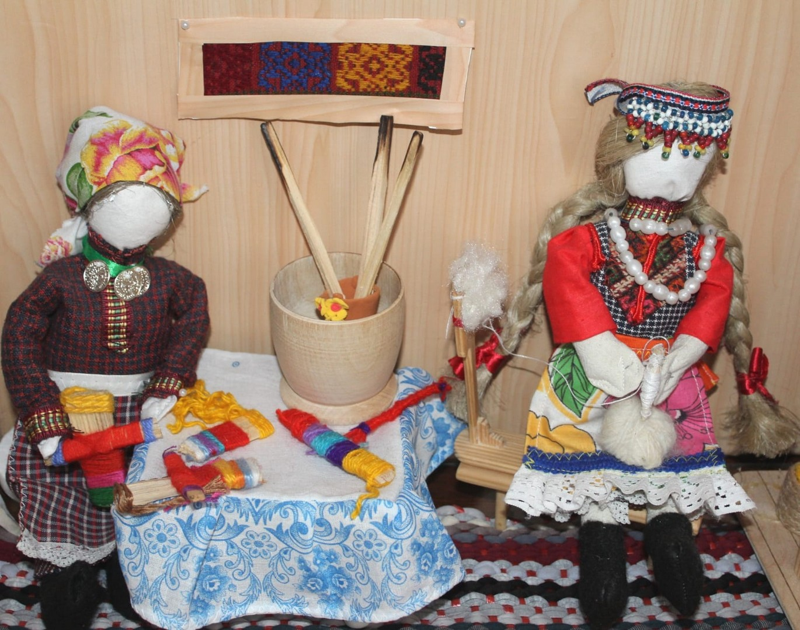
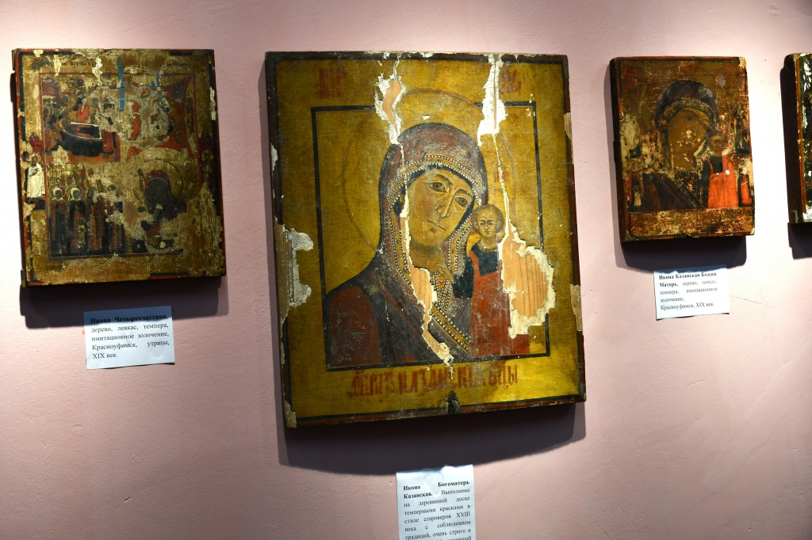
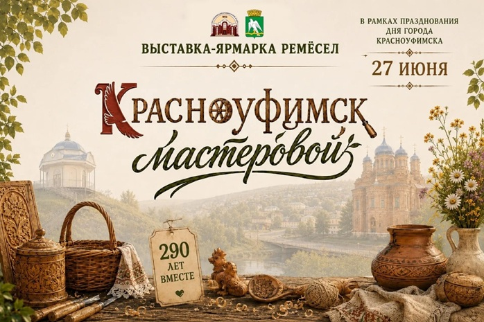

Ремесленники, традиции, маршруты творчества — в одном месте.
Мы собираем на одной карте всех ремесленников города и района.
Рассказываем, как мастера пришли в своё дело и что хранят семейные и народные традиции.
Стройте собственные маршруты или выбирайте готовые — чтобы увидеть и попробовать ремесло своими руками.
Помогаем мастерам быть заметнее, а жителям и туристам — находить уникальные вещи и впечатления.
Красноуфимские печатные пряники. Это здесь! «ПряничОК» — уютный уголок, где витает аромат сладостей и счастья. Легендарные печатные пряники «Красноуфимский гостинец», мастер-классы, сладкие подарки на заказ.
г. Красноуфимск, ул. Советская, 38 (2-й павильон)
8 909 009-55-43
Фигурка — 400₽, тарелка/кружка — 1000₽. Все материалы включены.
Создайте стильный браслет из натуральной кожи.
Базовые шаги, марийская дробь («тывырдык») и национальный ритм.

Обряды, орнамент, промыслы.

Каноны и мастера.

Торговые ряды и история.
Сегодня в Красноуфимске живут и творят мастера, которые продолжают вековые традиции. Их работы — это связь прошлого и настоящего, живое наследие для будущих поколений.
Заполните форму, и мы свяжемся с вами. После модерации ваша страница появится на сайте.
Скачайте наш буклет и познакомьтесь с проектом поближе.
Формат PDF, 2.5 МБ
Задайте вопрос, предложите сотрудничество или поделитесь идеей.